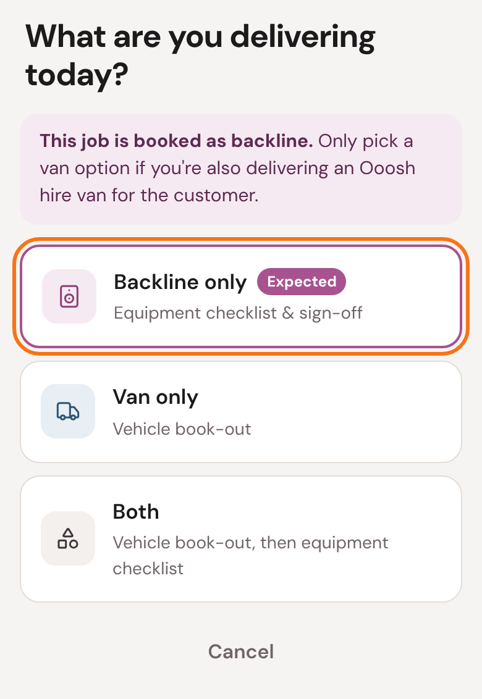
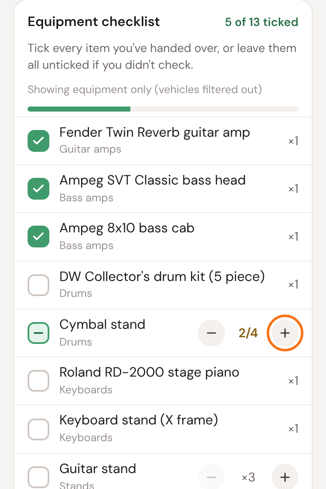
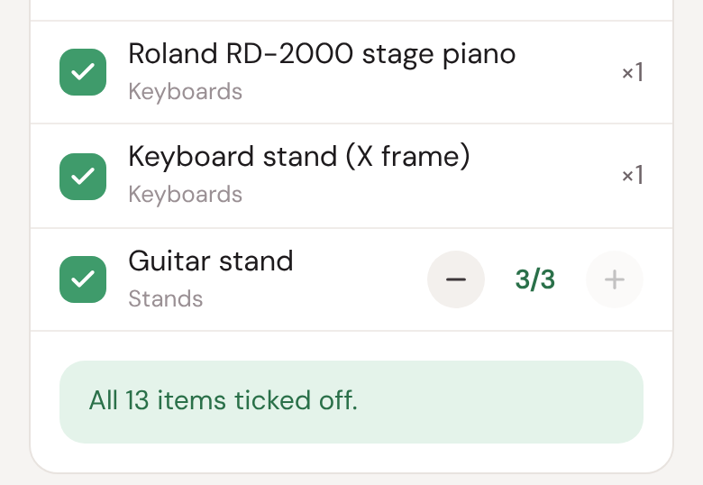
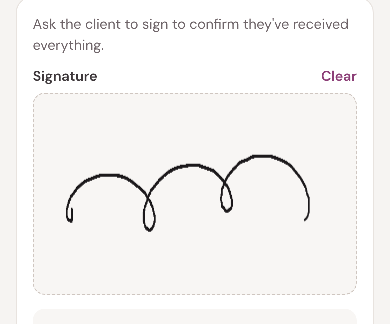
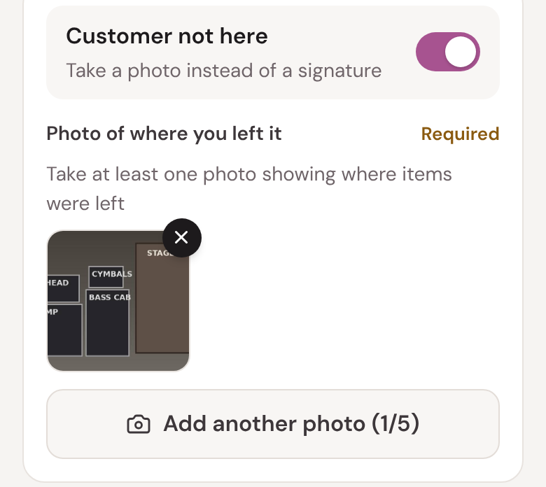
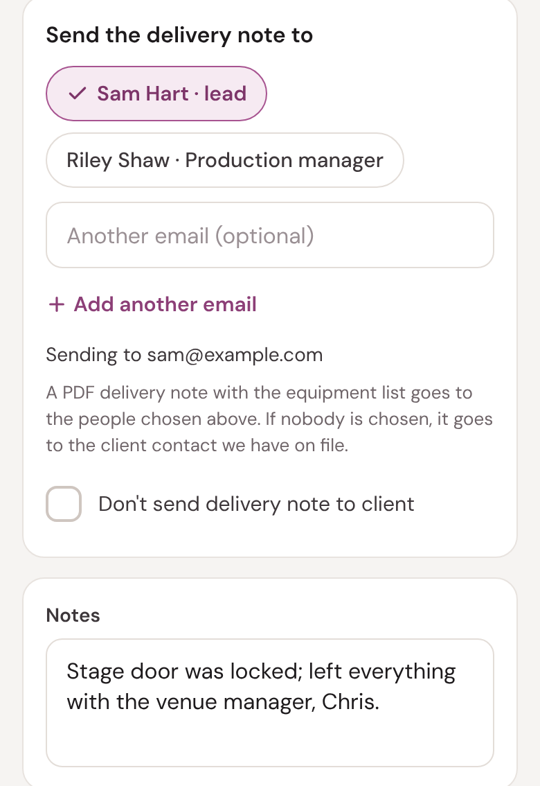
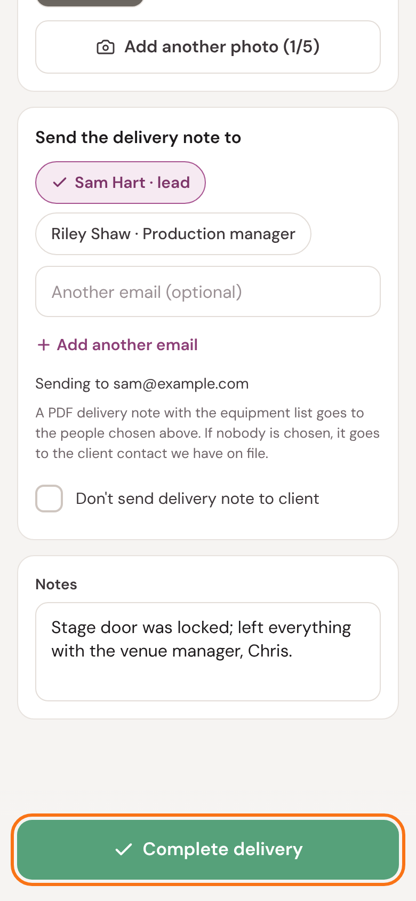

Delivering and collecting backline
The equipment checklist and sign-off
When you deliver or collect backline, you tick off every item against our list, and the customer signs to say it's all there. If nobody's there, you photograph where you left it.
We email the customer a delivery note (or, on a collection, a confirmation), so everyone agrees what was handed over.
Five things to remember
- Count each item as you tick it.
- Something missing or different? Say so in the notes.
- Get the customer's signature, or a photo of where you left it.
- Check who gets the delivery note.
- Tap Complete before you leave.
1
Start
When you get there, open the job in the portal and tap Start delivery (or Start collection) at the bottom.
Tap Backline only. Taking an Ooosh hire van to the customer as well? Tap Both: you'll do the van first, then this checklist.

2
Tick off the equipment
Tick each item as you hand it over (or, on a collection, as you load it). Where there's more than one, use + and − to count them.

Long list? Tap Show all at the bottom to see the rest.
When it's all there

Something missing, broken or different? Leave it unticked and say what in Notes (step 6).
Big list and no time to check it properly? Leave them all unticked and say so in the notes. That's better than ticking through without checking.
3
The customer signs
Hand the phone to the customer to sign: it confirms they've received everything (or, on a collection, handed it all back).

4
If the customer isn't there
Switch on Customer not here, then take at least one photo showing where you left the equipment. You can add up to five.

Then say who you left it with, or where, in the notes.
5
Who gets the delivery note
Tap the people who should get the delivery note. You can add another email address, or tick Don't send delivery note to client if they mustn't have one.

On a collection, this is Send the collection confirmation to, and works the same way.
6
Notes, then Complete
Use Notes for anything we should know: missing items, damage, access problems, who you left it with.
Then tap Complete delivery (or Complete collection). That finishes the job: there's nothing else to do.

?
If something's not right
- Something on the list isn't there.
- Leave it unticked and say so in the notes. If it matters for the show, call the office straight away.
- There's kit that isn't on the list.
- Say what in the notes.
- Something is damaged.
- Take a photo and say what in the notes.
- The list is empty, or it's for the wrong job.
- Call the office before you hand anything over.
- It won't complete.
- Check you have signal, and that there's a signature or (with Customer not here) a photo. Still stuck? Call the office.
The office: 01273 911382 · info@oooshtours.co.uk